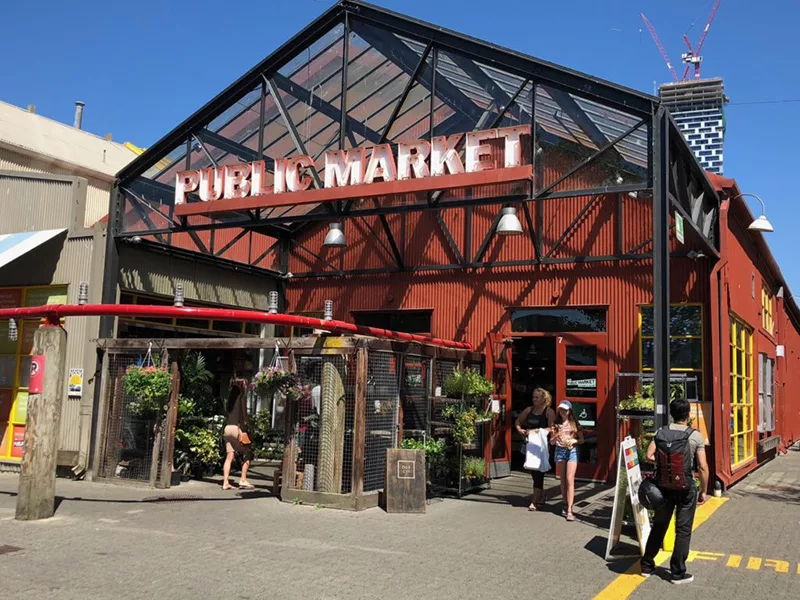
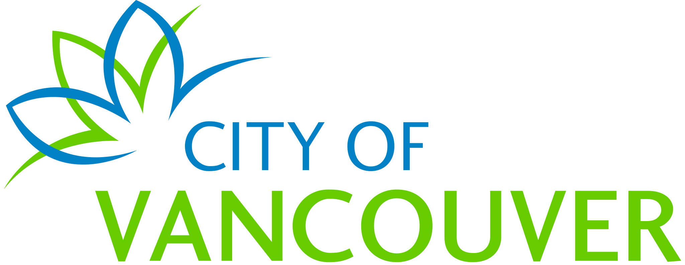
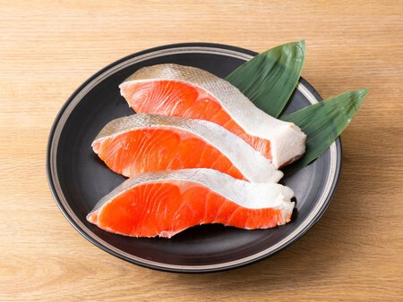
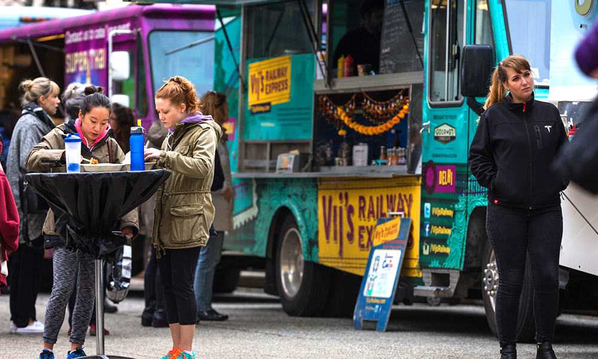

Dónde Comer
En este buscador, vas a poder filtrar por nombre, tipo de establecimiento y por barrio o marina.
ver más

En este buscador, vas a poder filtrar por nombre, tipo de establecimiento y por barrio o marina.
ver más
En Vancouver vas a encontrar mariscos frescos, cocina de fusión asiática y platillos de las Primeras Naciones.
ver más
Conocé el Granville Island Public Market y los mercados nocturnos de comida urbana en la ciudad.
ver más